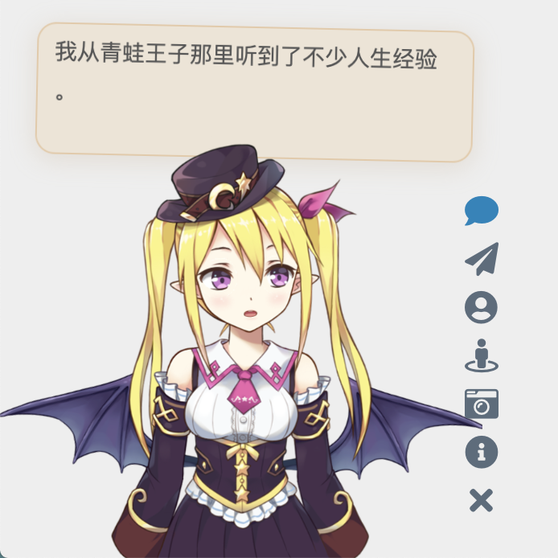
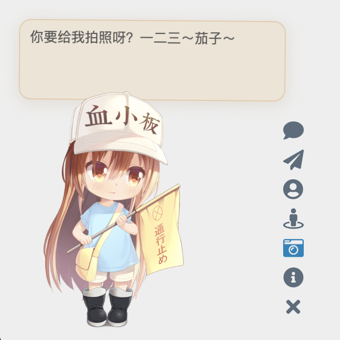

Live2D Widget


特性
- 在网页中添加 Live2D 看板娘
- 轻量级，除 Live2D Cubism Core 外无其他运行时依赖
- 核心代码由 TypeScript 编写，易于集成



注：以上人物模型仅供展示之用，本仓库并不包含任何模型。
你也可以查看示例网页：
- 在 米米的博客 的左下角可查看效果
- demo/demo.html，展现基础功能
- demo/login.html，仿 NPM 的登陆界面
使用
如果你是小白，或者只需要最基础的功能，那么只用将这一行代码加入 html 页面的 head 或 body 中，即可加载看板娘：
1 | <script src="https://fastly.jsdelivr.net/npm/live2d-widgets@1.0.1/dist/autoload.js"></script> |
添加代码的位置取决于你的网站的构建方式。例如，如果你使用的是 Hexo，那么需要在主题的模版文件中添加以上代码。对于用各种模版引擎生成的页面，修改方法类似。
如果网站启用了 PJAX，由于看板娘不必每页刷新，需要注意将该脚本放到 PJAX 刷新区域之外。
但是！我们强烈推荐自己进行配置，让看板娘更加适合你的网站！
如果你有兴趣自己折腾的话，请看下面的详细说明。
配置
你可以对照 dist/autoload.js 的源码查看可选的配置项目。autoload.js 会自动加载两个文件：waifu.css 和 waifu-tips.js。waifu-tips.js 会创建 initWidget 函数，这就是加载看板娘的主函数。initWidget 函数接收一个 Object 类型的参数，作为看板娘的配置。以下是配置选项：
| 选项 | 类型 | 默认值 | 说明 |
|---|---|---|---|
waifuPath |
string |
https://fastly.jsdelivr.net/npm/live2d-widgets@1.0.1/dist/waifu-tips.json |
看板娘资源路径，可自行修改 |
cdnPath |
string |
https://fastly.jsdelivr.net/gh/fghrsh/live2d_api/ |
CDN 路径 |
cubism2Path |
string |
https://fastly.jsdelivr.net/npm/live2d-widgets@1.0.1/dist/live2d.min.js |
Cubism 2 Core 路径 |
cubism5Path |
string |
https://cubism.live2d.com/sdk-web/cubismcore/live2dcubismcore.min.js |
Cubism 5 Core 路径 |
modelId |
number |
0 |
默认模型 id |
tools |
string[] |
见 autoload.js |
加载的小工具按钮 |
drag |
boolean |
false |
支持拖动看板娘 |
showToggleAfterQuit |
boolean |
true |
点击关闭后是否显示重新唤起按钮；若设为 false，则会永久关闭，直到清除本地存储 |
logLevel |
string |
error |
日志等级，支持 error，warn，info，trace |
模型仓库
本仓库中并不包含任何模型，需要单独配置模型仓库，并通过 cdnPath 选项进行设置。
旧版本的 initWidget 函数支持 apiPath 参数，这要求用户自行搭建后端，可以参考 live2d_api。后端接口会对模型资源进行整合并动态生成 JSON 描述文件。自 1.0 版本起，相关功能已通过前端实现，因此不再需要专门的 apiPath，所有模型资源都可通过静态方式提供。只要存在 model_list.json 和模型对应的 textures.cache，即可支持换装等功能。
开发
如果以上「配置」部分提供的选项还不足以满足你的需求，那么你可以自己进行修改。本仓库的目录结构如下：
src目录下包含了各个组件的 TypeScript 源代码，例如按钮和对话框等；build目录下包含了基于src中源代码构建后的文件（请不要直接修改！）；dist目录下包含了进一步打包后网页直接可用的文件，其中：autoload.js用于自动加载其它资源，例如样式表等；waifu-tips.js是由build/waifu-tips.js自动打包生成的，不建议直接修改；waifu.css是看板娘的样式表；waifu-tips.json中定义了触发条件（selector，CSS 选择器）和触发时显示的文字（text）。waifu-tips.json中默认的 CSS 选择器规则是对 Hexo 的 NexT 主题 有效的，为了适用于你自己的网页，可能需要自行修改，或增加新内容。
警告：waifu-tips.json中的内容可能不适合所有年龄段，或不宜在工作期间访问。在使用时，请自行确保它们是合适的。
要在本地部署本项目的开发测试环境，你需要安装 Node.js 和 npm，然后执行以下命令：
1 | git clone https://github.com/stevenjoezhang/live2d-widget.git |
如果需要使用 Cubism 3 及更新的模型，请单独下载并解压 Cubism SDK for Web 到 src 目录下，例如 src/CubismSdkForWeb-5-r.4。受 Live2D 许可协议（包括 Live2D Proprietary Software License Agreement 和 Live2D Open Software License Agreement）限制，本项目无法包含 Cubism SDK for Web 的源码。
如果只需要使用 Cubism 2 版本的模型，可以跳过此步骤。本仓库使用的代码满足 Live2D 许可协议中 Redistributable Code 相关条款。
完成后，使用以下命令进行编译和打包。
1 | npm run build |
src 目录中的 TypeScript 代码会被编译到 build 目录中，build 目录中的代码会被进一步打包到 dist 目录中。
为了能够兼容 Cubism 2 和 Cubism 3 及更新的模型，并减小代码体积，Cubism Core 及相关的代码会根据检测到的模型版本动态加载。
部署
在本地完成了修改后，你可以将修改后的项目部署在自己的服务器上，或者通过 CDN 加载。为了方便自定义有关内容，可以把这个仓库 Fork 一份，然后把修改后的内容通过 git push 到你的仓库中。
使用 jsDelivr CDN
如果要通过 jsDelivr 加载 Fork 后的仓库，使用方法对应地变为
1 | <script src="https://fastly.jsdelivr.net/gh/username/live2d-widget@latest/autoload.js"></script> |
将此处的 username 替换为你的 GitHub 用户名。为了使 CDN 的内容正常刷新，需要创建新的 git tag 并推送至 GitHub 仓库中，否则此处的 @latest 仍然指向更新前的文件。此外 CDN 本身存在缓存，因此改动可能需要一定的时间生效。
使用 Cloudflare Pages
也可以使用 Cloudflare Pages 来部署。在 Cloudflare Pages 中创建一个新的项目，选择你 Fork 的仓库。接下来，设置构建命令为 npm run build。完成后，Cloudflare Pages 会自动构建并部署你的项目。
Self-host
你也可以直接把这些文件放到服务器上，而不是通过 CDN 加载。
- 可以把修改后的代码仓库克隆到服务器上，或者通过
ftp等方式将本地文件上传到服务器的网站的目录下； - 如果你是通过 Hexo 等工具部署的静态博客，请把本项目的代码放在博客源文件目录下（例如
source目录）。重新部署博客时，相关文件就会自动上传到对应的路径下。为了避免这些文件被 Hexo 插件错误地修改，可能需要设置skip_render。
这样，整个项目就可以通过你的域名访问了。不妨试试能否正常地通过浏览器打开 autoload.js 和 live2d.min.js 等文件，并确认这些文件的内容是完整和正确的。
一切正常的话，接下来修改 autoload.js 中的常量 live2d_path 为 dist 目录的 URL 即可。比如说，如果你能够通过
1 | https://example.com/path/to/live2d-widget/dist/live2d.min.js |
访问到 live2d.min.js，那么就把 live2d_path 的值修改为
1 | https://example.com/path/to/live2d-widget/dist/ |
路径末尾的 / 一定要加上。
完成后，在你要添加看板娘的界面加入
1 | <script src="https://example.com/path/to/live2d-widget/dist/autoload.js"></script> |
就可以加载了。
鸣谢
感谢 BrowserStack 容许我们在真实的浏览器中测试此项目。
Thanks to BrowserStack for providing the infrastructure that allows us to test in real browsers!
感谢 jsDelivr 提供的 CDN 服务。
Thanks jsDelivr for providing public CDN service.
感谢 fghrsh 提供的 API 服务。
感谢 一言 提供的语句接口。
点击看板娘的纸飞机按钮时，会出现一个彩蛋，这来自于 WebsiteAsteroids。
更多
代码自这篇博文魔改而来：
https://www.fghrsh.net/post/123.html
更多内容可以参考：
https://nocilol.me/archives/lab/add-dynamic-poster-girl-with-live2d-to-your-blog-02
https://github.com/guansss/pixi-live2d-display
更多模型仓库：
https://github.com/zenghongtu/live2d-model-assets
除此之外，还有桌面版本：
https://github.com/TSKI433/hime-display
https://github.com/amorist/platelet
https://github.com/akiroz/Live2D-Widget
https://github.com/zenghongtu/PPet
https://github.com/LikeNeko/L2dPetForMac
以及 Wallpaper Engine：
https://github.com/guansss/nep-live2d
Live2D 官方网站：
https://www.live2d.com/en/
许可证
本仓库并不包含任何模型，用作展示的所有 Live2D 模型、图片、动作数据等版权均属于其原作者，仅供研究学习，不得用于商业用途。
本仓库的代码（不包括受 Live2D Proprietary Software License 和 Live2D Open Software License 约束的部分）基于 GNU General Public License v3 协议开源
http://www.gnu.org/licenses/gpl-3.0.html
Live2D 相关代码的使用请遵守对应的许可：
Live2D Cubism SDK 2.1 的许可证：
Live2D SDK License Agreement (Public)
Live2D Cubism SDK 5 的许可证：
Live2D Cubism Core は Live2D Proprietary Software License で提供しています。
https://www.live2d.com/eula/live2d-proprietary-software-license-agreement_cn.html
Live2D Cubism Components は Live2D Open Software License で提供しています。
https://www.live2d.com/eula/live2d-open-software-license-agreement_cn.html
更新日志
2020年1月1日起，本项目不再依赖于 jQuery。
2022年11月1日起，本项目不再需要用户单独加载 Font Awesome。